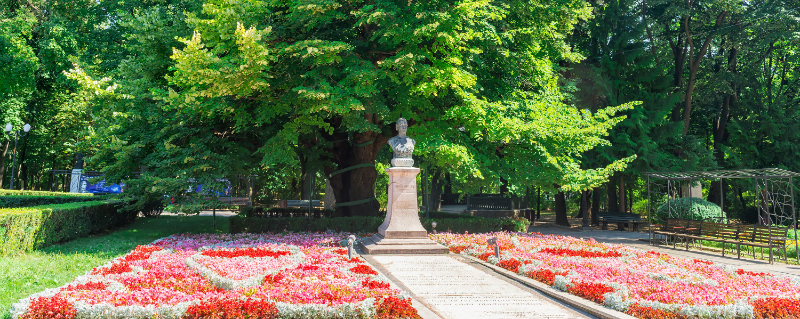
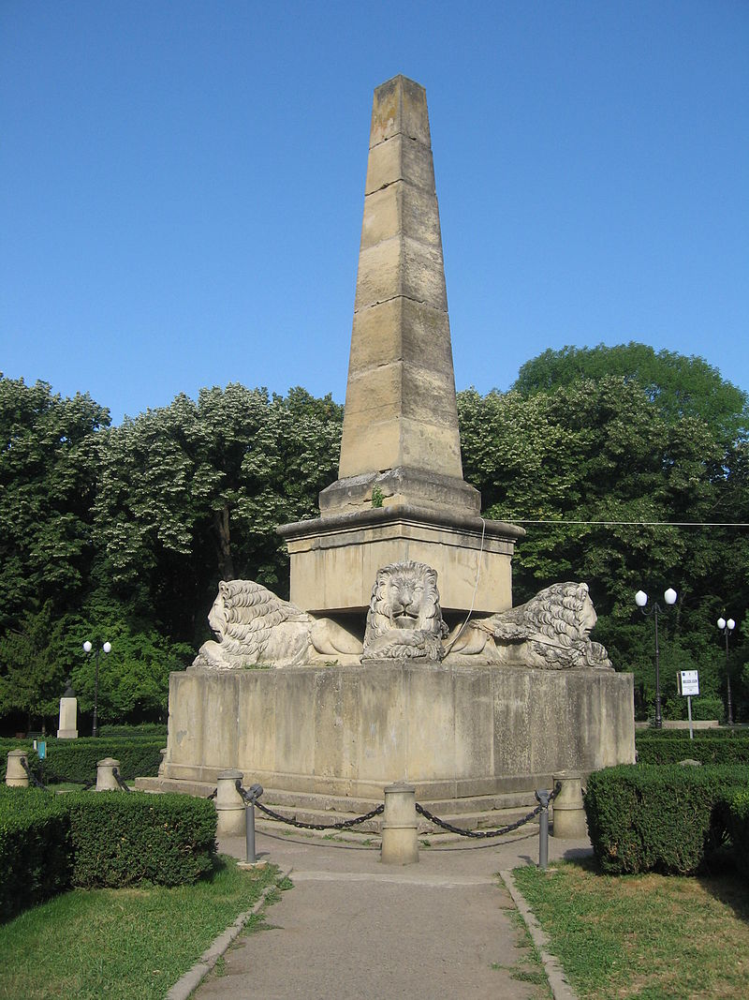

Parcul Copou
Parcul Copou (sau Grădina Copou) este cel mai vechi parc din Iași, situat pe dealul Copoului, fiind cel mai mare parc urban din zona centrală și de nord a orașului.
Contribuind semnificativ la calitatea aerului și la menținerea biodiversității locale, vegetația sa este majoritar arboricolă, cu o compoziție peisagistică apreciată pentru frumusețe, echilibru și valoare ecoprotectivă. Fondul principal este compus din tei, frasin și arțar, complementat de prezența a trei tipuri de arbuști: forsiția, iasomia și liliacul. Peisajele specifice grădinii includ un triplu aliniament de tisă pe latura estică, o pădurice de molid la nord și aliniamente de chiparos californian și de Thuja gigantea de-a lungul parterului central. Vegetația sa constituie o zonă de habitat natural pentru diverse specii de animale, în special veverițe și păsări.
Parcul datează din prima jumătate a secolului al XIX-lea, amenajarea sa începând în anii 1833-1834 sub domnia lui Mihail Sturza. Situat într-o zonă ale cărei spații verzi deveniseră populare în rândul conducătorilor Moldovei încă din a doua jumătate a secolului al XVII-lea, parcul a trecut prin mai multe etape de dezvoltare, atingându-și maximul de suprafață (19 hectare) și potențial estetic spre sfârșitul secolului al XIX-lea.
În imaginarul colectiv parcul a devenit un loc simbolic și se întinde astăzi pe circa 10 hectare, bucurându-se de o compoziție peisagistică care a fost descrisă ca fiind unică în Moldova. În centrul parcului este situat unul dintre cele mai vechi monumente din istoria modernă a țării, Obeliscul cu lei, ridicat după planurile lui Gheorghe Asachi în cinstea domnitorului moldovean și a puterilor suzerane și protectoare sub a căror influență se aflau Principatele Române.
Grădina – dominată de tei ale căror flori sunt un simbol recurent în poezia eminesciană, găzduiește Teiul lui Eminescu și un muzeu închinat poetului. Parcul este prezent inclusiv în literatura contemporană și pune la dispoziția vizitatorilor o Casă de Cultură numită „Mihai Ursachi”. Mai multe busturi dedicate unor personalități ale culturii române străjuiesc aleile principale, iar parcul rămâne o destinație populară în rândul localnicilor și al turiștilor. O serie de activități culturale, printre care festivaluri de poezie, expoziții de fotografie și târguri meșteșugărești, sunt organizate anual aici.
Monumente istorice, clădiri cu valoare culturală
Obeliscul cu lei
Cel mai important monument istoric din parc este Obeliscul cu lei, cunoscut, începând cu secolul al XX-lea, și sub denumirea de „Monumentul Regulamentului Organic”. Edificiul este amplasat în centrul grădinii, în apropiere de Teiul lui Eminescu. El a fost construit între anii 1834-1841 după planurile lui Gheorghe Asachi și ridicat în cinstea noului domnitor Mihail Sturza și a puterilor suzerane și protectoare sub a căror influență se afla Moldova. Fondurile pentru realizarea obeliscului, însumând 2.225 de galbeni, au fost obținute prin subscripție publică de la marea boierime și de la înaltul cler. Edificiul a fost lucrat în piatră de Șcheia de către sculptori polonezi.
Arbori notabili